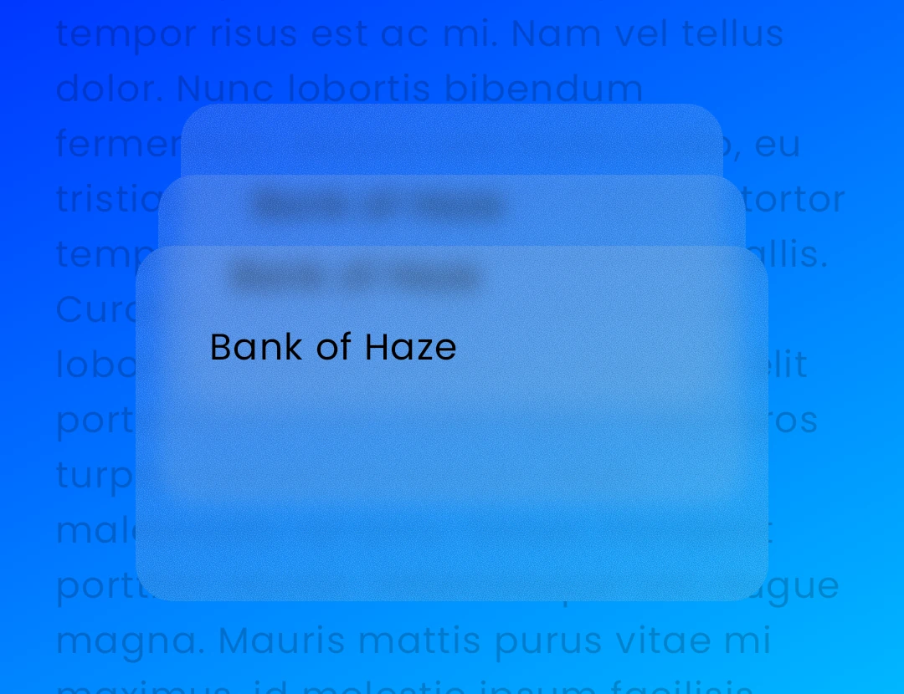

Usage
Haze is implemented through two Compose Modifiers: Modifier.hazeSource and Modifier.hazeEffect.
The most basic usage would be something like:
val hazeState = remember { HazeState() }
Box {
LazyColumn(
modifier = Modifier
.fillMaxSize()
// Pass it the HazeState we stored above
.hazeSource(state = hazeState)
) {
// todo
}
LargeTopAppBar(
// Need to make app bar transparent to see the content behind
colors = TopAppBarDefaults.largeTopAppBarColors(Color.Transparent),
modifier = Modifier
// We use hazeEffect on anything where we want the background
// blurred.
.hazeEffect(state = hazeState)
.fillMaxWidth(),
)
}
Styling¶
Haze has support for customizing the resulting effect, which is performed via the HazeStyle class, or the lambda block provided to hazeEffect.
Styles can be provided in a number of different ways:
- LocalHazeStyle composition local.
- The style parameter on Modifier.hazeEffect.
- By setting the relevant property in the optional HazeEffectScope lambda
block, passed into Modifier.hazeEffect.
HazeEffectScope¶
We now have a parameter on Modifier.hazeEffect which allow you to provide a lambda block, for controlling all of Haze's styling parameters. It is similar to concept to Modifier.graphicsLayer { ... }.
It's useful for when you need to update styling parameters, using values derived from other state. Here's an example which fades the effect as the user scrolls:
FooAppBar(
...
modifier = Modifier
.hazeEffect(state = hazeState) {
alpha = if (listState.firstVisibleItemIndex == 0) {
listState.layoutInfo.visibleItemsInfo.first().let {
(it.offset / it.size.height.toFloat()).absoluteValue
}
} else {
alpha = 1f
}
},
)
Styling resolution¶
As we a few different ways to set styling properties, it's important to know how the final values are resolved.
Each styling property (such as blurRadius) is resolved seperately, and the order of precedence for each property is as follows, in order:
- Value set in HazeEffectScope, if specified.
- Value set in style provided to hazeEffect (or HazeEffectScope.style), if specified.
- Value set in the LocalHazeStyle composition local.
Styling properties¶
Blur Radius¶
The blur radius controls how strong the blur effect is. This defaults to 20.dp but can be customized as needed. Larger values might be needed to keep foreground control (such as text) legible and accessible.
Tint¶
A tint effect is applied, primarily to maintain contrast and legibility. By default we use the provided background color at 70% opacity. You may wish to use a different color or opacity. You provide multiple tints, which will be applied in sequence.
Noise¶
Some visual noise is applied, to provide some tactility. This is completely optional, and defaults to a value of 0.15f (15% strength). You can disable this by providing 0f.
Progressive (aka gradient) blurs¶
Progressive blurs allow you to provide a visual effect where the blur radius is varied over a dimension. You may have seen this effect used on iOS.
Progressive blurs can be enabled by setting the progressive property on HazeEffectScope. The API is very similar to the Brush gradient APIs, so it should feel familiar.
LargeTopAppBar(
// ...
modifier = Modifier.hazeEffect(hazeState) {
progressive = HazeProgressive.verticalGradient(startIntensity = 1f, endIntensity = 0f)
}
)
Performance of Progressive
Please be aware that using progressive blurring does come with a performance cost. Please see the Performance page for up-to-date benchmarks.
As a quick summary: on Android SDK 33+ and other platforms, the cost is about 25% more than non-progressive. On Android SDK 32 it is about 2x. If performance is critical, you may wish to look at the masking functionality below.
Masking¶
You can provide any Brush, which will be used as a mask when the final effect is drawn.
LargeTopAppBar(
// ...
modifier = Modifier.hazeEffect(hazeState) {
mask = Brush.verticalGradient(...)
}
)
Mask vs Progressive
When you provide a gradient brush as a mask, the effect is visually similar to a gradient blur. The difference is that the effect is faded through opacity only, and may not feel as refined. However, it is much faster than progressive blurring, having a negligible cost.
Input Scale¶
You can provide an input scale value which determines how much the content is scaled in both the x and y dimensions, allowing the blur effect to be potentially applied over scaled-down content (and thus less pixels), before being scaled back up and drawn at the original size.

LargeTopAppBar(
// ...
modifier = Modifier.hazeEffect(hazeState) {
inputScale = HazeInputScale.Auto
}
)
HazeInputScale has a number of different options:
HazeInputScale.None: Turns off input scaling (default)HazeInputScale.Auto: Turns on input scaling, with automatic values derived underneath.HazeInputScale.Fixed(...): Turns on input scaling, using the value you pass in.
When using a Fixed value, less than 1.0 may improve performance, at the sacrifice of quality and crispness. As always, run your own benchmarks as to whether this compromise is worth it.
If you're looking for a good value to experiment with, 0.66 results in a reduction in total resolution of ~55%, while being visually imperceptible to most people (probably).
The minimum value I would realistically use is somewhere in the region of 0.33, which results in the total pixel count of only 11% of the original content. This is likely to be visually different to no scaling, but depending on the styling parameters, it will be visually pleasing to the user.
Overlapping blurred layouts¶
A layout node can use both a Modifier.hazeEffect, drawing a blurred effect from other areas, and use Modifier.hazeSource to draw itself for other hazeEffect users.
This nested functionality sounds complicated, but in reality it enables a simple use case: overlapping blurred layout nodes.

This code to implement this is like below. You can see that the CreditCard() nodes use both the hazeSource and hazeEffect modifiers. Pay attention to the modifier order here.
Box {
val hazeState = remember { HazeState() }
Background(
modifier = Modifier
.hazeSource(hazeState, zIndex = 0f)
)
// Rear card
CreditCard(
modifier = Modifier
.hazeSource(hazeState, zIndex = 1f)
.hazeEffect(hazeState)
)
// Middle card
CreditCard(
modifier = Modifier
.hazeSource(hazeState, zIndex = 2f)
.hazeEffect(hazeState),
)
// Front card
CreditCard(
modifier = Modifier
.hazeSource(hazeState, zIndex = 3f)
.hazeEffect(hazeState)
)
}
You will notice that there's something different here, the zIndex parameter.
For this to work you need to pass in the zIndex parameter of the node. It doesn't matter if you use Modifier.zIndex, or the implicit ordering from the layout, you need to explicitly pass in a valid zIndex value.
zIndex¶
Internally, the zIndex value is how Haze knows which layers to draw in which nodes. By default, hazeEffect will draw all layers with a zIndex less than the value of the sibling Modifier.hazeSource. So in the example above, the middle card (zIndex of 2) will draw the rear card (zIndex of 1) and background (zIndex of 0).
This default behavior is usually the correct behavior for all use cases, but you can modify this behavior via the canDrawArea parameter, which acts as a filter when set:
CreditCard(
modifier = Modifier
.hazeSource(hazeState, zIndex = 2f, key = "foo")
.hazeEffect(hazeState) {
canDrawArea = { area ->
// return true to draw
area.key != "foo"
}
},
)
You'll notice that we're using another parameter here, key. This just acts as an ID for the node allowing easier filtering. It has serves no other purpose.